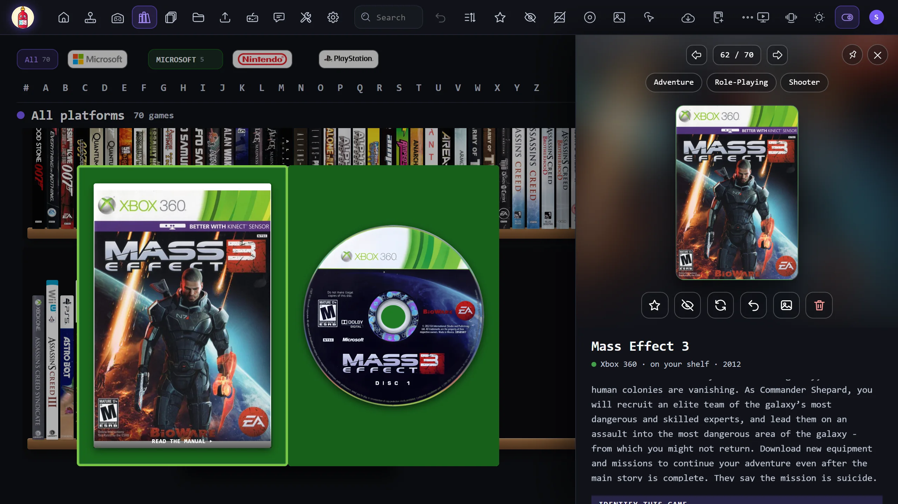

Sur votre propre ordinateur
Téléchargez l'application de bureau ou la version portable pour Windows, macOS ou Linux. Rien d'autre à installer : pas de serveur, pas de Docker, aucun réglage à modifier.
Télécharger la dernière versionGratuit · open source · auto-hébergé
game-sauce répertorie les jeux que vous possédez, récupère les jaquettes, fait tourner beaucoup d'entre eux dans votre navigateur, lance les autres dans les émulateurs de votre PC, et affiche toute la bibliothèque sur la télé avec un Grand écran piloté à la manette.
Windows · macOS (Apple silicon) · Linux · Docker, Unraid et Proxmox · Raspberry Pi
Les captures d’écran et les vidéos montrent une bibliothèque de démonstration. Les jaquettes et visuels des jeux appartiennent à leurs propriétaires respectifs.
Une seule bibliothèque pour tout le foyer, sur une machine que vous contrôlez.
Jouez aux jeux compatibles dans le navigateur, même sur votre téléphone.
Parcourez, cherchez et jouez avec votre seule manette.
Deux styles, chacun en clair ou en sombre. Moderne ajoute un mode très sombre et une police rétro.
Une étoile pour les meilleurs, des collections pour le reste.
Lisez le manuel sans quitter la page du jeu.
Windows, Mac, Linux, Docker, Raspberry Pi, Proxmox et Unraid.
Créez des comptes, fixez le rôle de chacun et désactivez n'importe quel compte.
Une simple grille de jeux jouables, sans téléchargement ni pages d'administration. Idéal pour les enfants.
Choisissez qui peut télécharger les fichiers de jeu : tout le monde, personne, ou personne par personne.
Chacun voit ses propres jeux Steam et console, et ceux de personne d'autre.
Chacun garde sa propre étagère de disques et de cartouches.
Anglais, français, chinois, espagnol, portugais, allemand, japonais et italien.
Aucun pistage, aucun piège. Gratuit, et à vous.
Les sauvegardes et les empreintes de jeux s'exécutent selon le calendrier que vous fixez.
Sauvegardez tout, et restaurez simplement quand il le faut.
Un rapport global sur la santé de tout votre système.
Importez des ressources de jeu depuis des dossiers et des fichiers zip.
Les administrateurs sont prévenus dans le chat dès qu'une nouvelle version sort.
Consoles, portables, ordinateurs et arcade, côte à côte.
Comparées à No-Intro et Redump, pour savoir que vos ROM sont bonnes.
Repère les copies en trop et suggère laquelle garder.
Transforme des noms de fichier comme sf2 en Street Fighter II.
Voyez quelle part de la liste officielle de chaque plateforme vous possédez, en ROM, physique et numérique.
Exportez votre collection en CSV, modifiez-la dans un tableur, puis réimportez-la.
Graphiques et statistiques sur tout ce que contient votre bibliothèque.
Récupérez jaquettes, logos et vidéos depuis ScreenScraper, SteamGridDB, IGDB ou TheGamesDB, ou utilisez les vôtres.
Deux courts extraits de la bibliothèque de démonstration intégrée.
Une vue plein écran conçue pour une manette et un canapé. Ouvrez-la depuis la bibliothèque d'un clic, et passez le navigateur ou l'application de bureau en plein écran sur la télé.


Une étagère de jaquettes plein écran sur un arc doux. Choisissez une famille et une plateforme, faites défiler avec les flèches, la molette, un balayage ou une manette, et appuyez sur jouer.
Répertoriez les jeux en boîte de votre vraie étagère, à la main ou depuis une liste, à côté de votre collection numérique. Chaque personne a sa propre étagère.
Des messages privés entre les personnes de votre serveur, et des avis de l'administrateur. Rien ne quitte votre propre machine.

Looks Classique et Moderne, clair et sombre. La même bibliothèque, à votre goût.





Choisissez ce qui vous convient. Chacun prend quelques minutes.
Téléchargez l'application de bureau ou la version portable pour Windows, macOS ou Linux. Rien d'autre à installer : pas de serveur, pas de Docker, aucun réglage à modifier.
Télécharger la dernière versionLancez-le avec Docker, sur Unraid ou dans un conteneur Proxmox, et utilisez-le depuis tous les appareils de la maison. Le guide de déploiement donne les étapes.
Lire le guide de déploiementAu premier démarrage, le compte qui a été créé pour vous s'affiche une seule fois. Notez-le et changez le mot de passe dans les Réglages. Si vous l'exposez à Internet, placez-le derrière un VPN ou un proxy inverse avec HTTPS.
Non. game-sauce sert à gérer les jeux que vous possédez. Il n'inclut ni ne fournit de jeux ni de fichiers BIOS, et ne télécharge pas de jeux pour vous : vous apportez votre propre collection. Pour jouer, le jeu dans le navigateur repose sur EmulatorJS, un émulateur open source que votre navigateur charge quand vous appuyez sur Jouer. Pour jouer sur votre PC, la page Émulateurs recommande des émulateurs et indique où les obtenir, et le lanceur démarre ceux que vous installez vous-même.
Oui. Il est open source sous licence MIT. Il n'y a aucun compte à créer, aucun abonnement et aucun suivi. Certains fournisseurs de métadonnées vous demandent de créer votre propre compte gratuit pour utiliser leur service.
De nombreuses consoles anciennes qui n'ont pas besoin de BIOS fonctionnent depuis une page web. Les systèmes plus récents, et tout ce qui demande plus que ce qu'un navigateur peut offrir, démarrent plutôt dans un émulateur sur votre PC via le lanceur.
Pas dans les dossiers que vous lui indiquez. Il les lit là où ils sont et ne déplace, ne renomme ni ne supprime jamais les fichiers qui s'y trouvent. Les outils de nettoyage ne touchent que les illustrations et les fichiers que game-sauce a stockés lui-même.
Oui. Créez des comptes pour les personnes de confiance. Les collections sont privées pour celui qui les a créées, et les comptes « jeu uniquement » ne voient que les jeux jouables dans le navigateur.
Ouvrez un ticket ou une discussion sur GitHub, ou écrivez à hello@gamesauce.app. La page Santé du système dans les Réglages produit un rapport à copier-coller, sans aucun secret.
game-sauce est gratuit et open source. Si vous le trouvez utile, vous pouvez m'offrir un café. Cela m'aide à consacrer plus de temps aux nouvelles fonctionnalités, aux tests sur Windows, Mac et Linux, et aux réponses à vos questions.